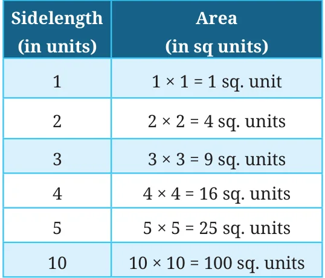

Why are the numbers, 1, 4, 9, 16, …, called squares? We know that the number of unit squares in a square (the area of a square) is the product of its sides. The table below gives the areas of squares with different sides.

| Sidelength (in units) | Area (in sq units) |
|---|---|
| 1 | \(1 \times 1 = 1\) sq. unit |
| 2 | \(2 \times 2 = 4\) sq. units |
| 3 | \(3 \times 3 = 9\) sq. units |
| 4 | \(4 \times 4 = 16\) sq. units |
| 5 | \(5 \times 5 = 25\) sq. units |
| 10 | \(10 \times 10 = 100\) sq. units |
We use the following notation for squares.
\(1 \times 1 = 1^2 = 1\)
\(2 \times 2 = 2^2 = 4\)
\(3 \times 3 = 3^2 = 9\),
\(4 \times 4 = 4^2 = 16\)
\(5 \times 5 = 5^2 = 25\).
In general, for any number n, we write \(n \times n = n^2\), which is read as ‘n squared’.
Can we have a square of sidelength \(\frac{3}{5}\) or 2.5 units?
Yes, their areas in square units are \(\left(\frac{3}{5}\right)^2 = \frac{3}{5} \times \frac{3}{5} = \frac{9}{25}\),
and \((2.5)^2 = (2.5) \times (2.5) = 6.25\).
The squares of natural numbers are called perfect squares. For example, 1, 4, 9, 16, 25, … are all perfect squares.